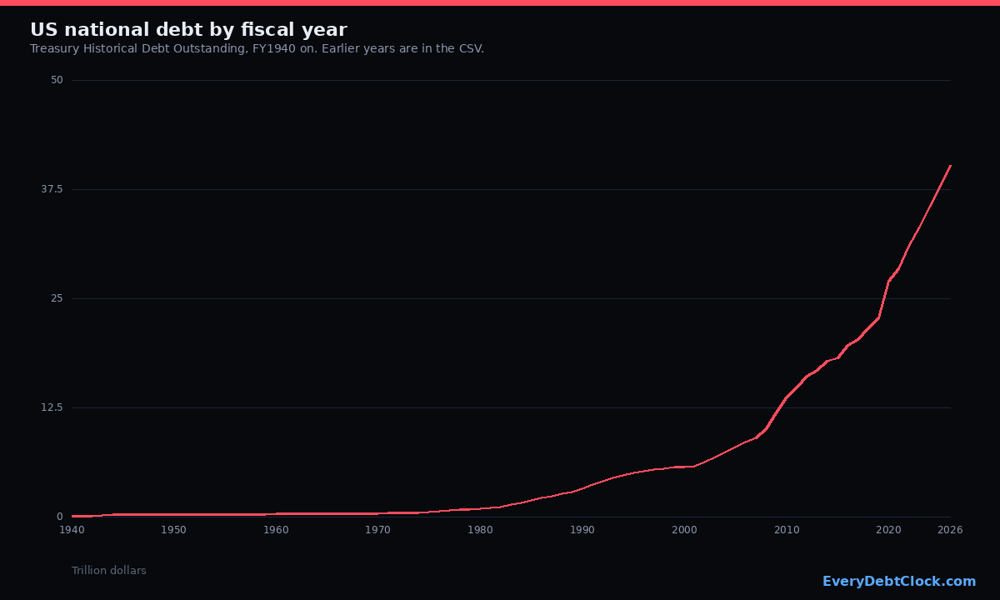
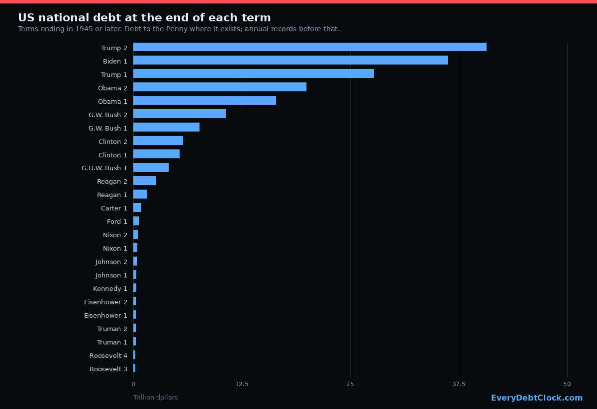
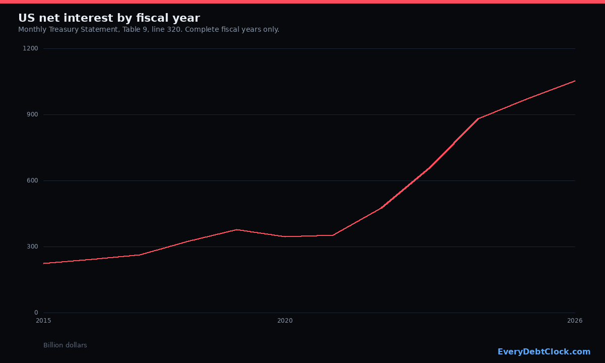
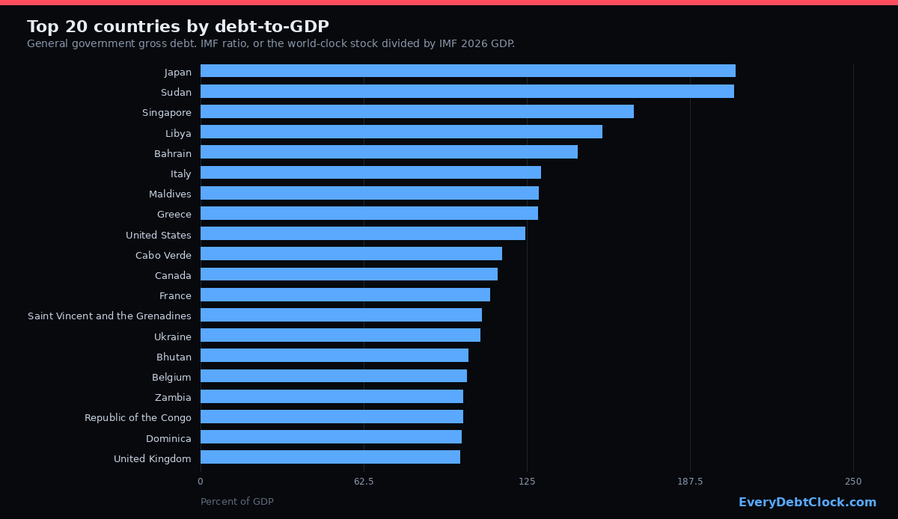

Official: $40.69 trillion on Nov 18, 2026 (U.S. Treasury).
EVERY DEBT CLOCKThese files are free to use. For the Treasury history files, the citation line is: Source: Every Debt Clock (everydebtclock.com), from U.S. Treasury Debt to the Penny.
Updated Nov 18, 2026
us-debt-daily.csv and us-debt-daily.json are every Debt to the Penny close from 1993-04-01. us-debt-annual.csv and us-debt-annual.json are Historical Debt Outstanding from fiscal year 1790. Dollar amounts are the official stocks, not the live clock. A blank cell means that source has not published the figure. The other files are the series this site already publishes: debt by year with OMB ratios, debt by president, debt per person, interest, state debt, and country debt. OMB surplus is the Historical Tables balance: positive is a surplus, negative is a deficit. The country file is the same stock as the world debt clock. A country's own clock can be a narrower total. The United States row there is the IMF figure.
CSV files
| File | Series | What it contains | Rows |
|---|---|---|---|
| us-debt-daily.csv | US national debt, daily | Every Debt to the Penny close from 1993-04-01 through 2026-11-18 (8437 rows). Total public debt outstanding, plus the held-by-public and intragovernmental split when Treasury publishes it. | 8437 |
| us-debt-daily.json | US national debt, daily (JSON) | Every Debt to the Penny close from 1993-04-01 through 2026-11-18 (8437 rows). Total public debt outstanding, plus the held-by-public and intragovernmental split when Treasury publishes it. | 8437 |
| us-debt-annual.csv | US national debt, fiscal year | Treasury Historical Debt Outstanding, fiscal years 1790 through 2026 (238 rows). One official total per fiscal year. | 238 |
| us-debt-annual.json | US national debt, fiscal year (JSON) | Treasury Historical Debt Outstanding, fiscal years 1790 through 2026 (238 rows). One official total per fiscal year. | 238 |
| us-debt-by-year.csv | US national debt by fiscal year | Treasury total at each fiscal year end, plus OMB debt-to-GDP and the surplus or deficit where the FY2027 Historical Tables publish them. | 237 |
| us-debt-by-president.csv | US national debt by president | Debt at the start and end of each term. Daily closes from 1993; annual Historical Debt Outstanding before that. The open term ends at the latest Debt to the Penny close. | 69 |
| us-debt-per-person.csv | US debt per person, household, and tax return | One row for the latest Treasury close divided by Census population, Census households, and IRS returns filed, then one row per fiscal year of debt divided by the July 1 population. | 128 |
| us-interest.csv | Interest on the US debt | Official Daily Treasury Statement cash interest, MTS net interest by fiscal year, and Treasury's interest-expense dataset by fiscal year. | 32 |
| us-state-debt.csv | US state debt | Census state and local government debt for all 50 states and the District of Columbia. The total is the official stock on each state page, not the projection. | 51 |
| country-debt.csv | Country debt | One row per economy on the world debt clock, with the source (IMF, Eurostat, QPSD, or a national series) and the as-of date. | 186 |
Each file
us-debt-daily.csv
Every Debt to the Penny close from 1993-04-01 through 2026-11-18 (8437 rows). Total public debt outstanding, plus the held-by-public and intragovernmental split when Treasury publishes it.
Held by the public and intragovernmental holdings are blank before 1997-09-30, when Treasury's file starts publishing that split. On 2011-02-01 (parts minus total = $0.03) and 2025-08-04 (parts minus total = $10,000,000,000.00), Treasury's published held-by-the-public and intragovernmental figures do not add to the published total. Those rows are copied as Treasury published them.
Columns. record_date, total_public_debt_outstanding_usd, debt_held_by_the_public_usd, intragovernmental_holdings_usd, parts_equal_total, parts_gap_usd, source, source_url, attribution, last_updated
Source. Treasury, Debt to the Penny
Updated. Rewritten by the daily GitHub Action that refreshes this site from Treasury (every morning, weekday afternoons when Debt to the Penny has a new record date, and weekday end of day).
Citation. Source: Every Debt Clock (everydebtclock.com), from U.S. Treasury Debt to the Penny
us-debt-daily.json
Every Debt to the Penny close from 1993-04-01 through 2026-11-18 (8437 rows). Total public debt outstanding, plus the held-by-public and intragovernmental split when Treasury publishes it.
Held by the public and intragovernmental holdings are blank before 1997-09-30, when Treasury's file starts publishing that split. On 2011-02-01 (parts minus total = $0.03) and 2025-08-04 (parts minus total = $10,000,000,000.00), Treasury's published held-by-the-public and intragovernmental figures do not add to the published total. Those rows are copied as Treasury published them.
The JSON wrapper, not each row, carries source, source URL, attribution, and last_updated.
Columns. record_date, total_public_debt_outstanding_usd, debt_held_by_the_public_usd, intragovernmental_holdings_usd, parts_equal_total, parts_gap_usd
Source. Treasury, Debt to the Penny
Updated. Rewritten by the daily GitHub Action that refreshes this site from Treasury (every morning, weekday afternoons when Debt to the Penny has a new record date, and weekday end of day).
Citation. Source: Every Debt Clock (everydebtclock.com), from U.S. Treasury Debt to the Penny
us-debt-annual.csv
Treasury Historical Debt Outstanding, fiscal years 1790 through 2026 (238 rows). One official total per fiscal year.
On dates that appear in both files the totals match, except FY1999 1999-09-30: annual $5656270901615.43, daily $5656270901633.43. A fiscal-year-end date is not always a Debt to the Penny business day (8 annual dates after the daily series starts are not in the daily file).
Columns. fiscal_year, record_date, total_public_debt_outstanding_usd, source, source_url, attribution, last_updated
Source. Treasury, Historical Debt Outstanding
Updated. Rewritten by the daily GitHub Action that refreshes this site from Treasury (every morning, weekday afternoons when Debt to the Penny has a new record date, and weekday end of day).
Citation. Source: Every Debt Clock (everydebtclock.com), from U.S. Treasury Historical Debt Outstanding
us-debt-annual.json
Treasury Historical Debt Outstanding, fiscal years 1790 through 2026 (238 rows). One official total per fiscal year.
On dates that appear in both files the totals match, except FY1999 1999-09-30: annual $5656270901615.43, daily $5656270901633.43. A fiscal-year-end date is not always a Debt to the Penny business day (8 annual dates after the daily series starts are not in the daily file).
The JSON wrapper carries source, source URL, attribution, and last_updated.
Columns. fiscal_year, record_date, total_public_debt_outstanding_usd
Source. Treasury, Historical Debt Outstanding
Updated. Rewritten by the daily GitHub Action that refreshes this site from Treasury (every morning, weekday afternoons when Debt to the Penny has a new record date, and weekday end of day).
Citation. Source: Every Debt Clock (everydebtclock.com), from U.S. Treasury Historical Debt Outstanding
us-debt-by-year.csv
Treasury total at each fiscal year end, plus OMB debt-to-GDP and the surplus or deficit where the FY2027 Historical Tables publish them.
Columns. fiscal_year, total_debt_usd, omb_gross_debt_pct_gdp, omb_held_by_public_pct_gdp, omb_surplus_pct_gdp, source, source_url, as_of
Source. https://fiscaldata.treasury.gov/datasets/historical-debt-outstanding/historical-debt-outstanding
Updated. Rewritten when the daily refresh rebuilds the site from the figures it already publishes.
Citation. Source: EveryDebtClock.com
us-debt-by-president.csv
Debt at the start and end of each term. Daily closes from 1993; annual Historical Debt Outstanding before that. The open term ends at the latest Debt to the Penny close.
Columns. president, term_number, term_start, term_end, term_in_progress, debt_start_usd, debt_start_date, debt_start_basis, debt_end_usd, debt_end_date, debt_end_basis, change_usd, change_pct, source, source_url, as_of
Source. https://fiscaldata.treasury.gov/datasets/debt-to-the-penny/debt-to-the-penny
Updated. Rewritten when the daily refresh rebuilds the site from the figures it already publishes.
Citation. Source: EveryDebtClock.com
us-debt-per-person.csv
One row for the latest Treasury close divided by Census population, Census households, and IRS returns filed, then one row per fiscal year of debt divided by the July 1 population.
Columns. row_type, fiscal_year, total_debt_usd, population, population_as_of, population_series, debt_per_person_usd, households, households_as_of, debt_per_household_usd, tax_returns_filed, tax_returns_period, debt_per_tax_return_usd, source, source_url, as_of
Source. https://fiscaldata.treasury.gov/datasets/debt-to-the-penny/debt-to-the-penny
Updated. Rewritten when the daily refresh rebuilds the site from the figures it already publishes.
Citation. Source: EveryDebtClock.com
us-interest.csv
Official Daily Treasury Statement cash interest, MTS net interest by fiscal year, and Treasury's interest-expense dataset by fiscal year.
Columns. series, fiscal_year, amount_usd, complete, note, source, source_url, as_of
Updated. Rewritten when the daily refresh rebuilds the site from the figures it already publishes.
Citation. Source: EveryDebtClock.com
us-state-debt.csv
Census state and local government debt for all 50 states and the District of Columbia. The total is the official stock on each state page, not the projection.
Columns. state, slug, region_code, total_debt_usd, state_government_debt_usd, local_government_debt_usd, population, population_as_of, debt_per_person_usd, measure, source, source_url, as_of
Source. https://www.census.gov/data/datasets/2024/econ/local/public-use-datasets.html
Updated. Rewritten when the daily refresh rebuilds the site from the figures it already publishes.
Citation. Source: EveryDebtClock.com
country-debt.csv
One row per economy on the world debt clock, with the source (IMF, Eurostat, QPSD, or a national series) and the as-of date.
Columns. country, iso3, slug, debt_local, currency, debt_usd, debt_to_gdp_pct, measure, source_family, source, source_url, fx_usd_per_unit, fx_as_of, fx_source, population, population_as_of, as_of
Source. https://www.imf.org/external/datamapper/GGXWDG_NGDP@WEO
Updated. Rewritten when the daily refresh rebuilds the site from the figures it already publishes.
Citation. Source: EveryDebtClock.com
Charts
Redrawn on every build from the CSV files. Each image carries the credit EveryDebtClock.com.
US national debt by fiscal year



Citation
Source: EveryDebtClock.com (https://everydebtclock.com/)
HTML
<img src="https://everydebtclock.com/data/charts/us-debt-by-year.png" alt="Line chart of US national debt by fiscal year from FY1940"> <a href="https://everydebtclock.com/">Source: EveryDebtClock.com</a>
US national debt by president



Citation
Source: EveryDebtClock.com (https://everydebtclock.com/)
HTML
<img src="https://everydebtclock.com/data/charts/us-debt-by-president.png" alt="Bar chart of US national debt at the end of each presidential term since 1945"> <a href="https://everydebtclock.com/">Source: EveryDebtClock.com</a>
US net interest by fiscal year



Citation
Source: EveryDebtClock.com (https://everydebtclock.com/)
HTML
<img src="https://everydebtclock.com/data/charts/us-interest-by-year.png" alt="Line chart of US net interest on the debt by fiscal year"> <a href="https://everydebtclock.com/">Source: EveryDebtClock.com</a>
Top 20 countries by debt-to-GDP



Citation
Source: EveryDebtClock.com (https://everydebtclock.com/)
HTML
<img src="https://everydebtclock.com/data/charts/countries-debt-to-gdp.png" alt="Bar chart of the 20 countries with the highest general-government debt-to-GDP"> <a href="https://everydebtclock.com/">Source: EveryDebtClock.com</a>
The same figures, with the source notes, are on national debt by year, debt by president, debt per person, interest on the debt, state debt clocks, and the world debt clock.